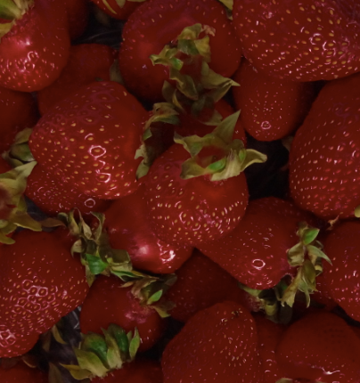

The
Garden
SUPPORT

I choose to raise this Garden up from the void without support.
But, if you insist... send me questions, comments, and corrections:
enter.the.garden.green@gmail.com
The most important thing you could possibly do to support the Garden
is get competent, get knowledgeable, and solve real world problems.
If it's helped you, and you're sure of it, then spread it around!
Getting others on board is how we can help this grow.
I would also highly appreciate translations, adaptations, or creations inspired by the Garden.
And if you really insist, then take lessons from me personally.
Ask and I will provide.